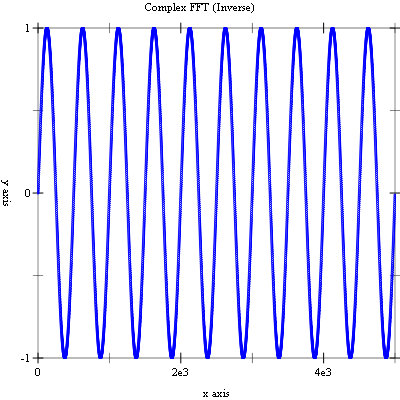

12 Fast Fourier Transforms
This chapter describes the functions for performing Fast Fourier Transforms (FFTs) provided by the Science Collection. This includes radix-2 functions (for lengths that are a power of two) and mixed-radix routines (for any length).
Fast Fourier Transforms are efficient algorithms for calculating the discrete Fourier transform (DFT)
 .
.
The naive evaluation of the discrete Fourier transform is a matrix-vector multiplication . A general matrix-vector multiplication takes O(n2) operations for n data points. Fast Fourier Transform algorithms use a divide-and-conquer strategy to factor the matrix W into smaller submatrices corresponding to the integer factors of the length, n. If n can be factored into a product of integers, f1, f2, ..., fm, then the DFT can be computed in O(n/Σ(fi)) operations. For a radix-2 FFT, this gives an operation count of O(n/log2 n).
All of the FFT functions offer three types of transform: forward, inverse, and backwards, based on the same mathematical definitions. The definition of the forward Fourier transform, x = FFT(x), is
 ,
,
and the definition of the inverse Fourier transform, x=IFFT(z), is
.
The factor of 1/n makes this a true inverse. For example, a call to fft-complex-forward followed by a call to fft-complex-inverse should return the original data (within numeric errors).
In general, there are two possible choices for the sign of the exponential in the transform / inverse transform pair. The Science Collection follows the same convential as the GSL (which follows the same convention as FFTPACK) of using a negative exponential for the forward transform. The advantage of this convention is that the inverse transform recreates the original function with simple Fourier synthesis.
The backwards FFT is simply an unscaled version of the inverse FFT,
.
When the overall scale of the result is unimportant, it is often convenient to use the backwards FFT instead of the inverse to save unnecessary divisions.
For the transform versions of the functions, the sign argument can be either fft-forward (-1.0) or fft-backward (1.0).
syntax
syntax
The functions described in this chapter are defined in the "fft.rkt" file in the Science Collection and are made available ising the form:
| (require (planet williams/science/fft)) |
12.1 Radix-2 FFT Routines
The radix-2 algorithms described in this section are simple and compact, although not necessarily the most efficient. They use the Cooley-Tukey algorithm to compute in-place complex FFTs for lengths that are a power of 2 —
procedure
(fft-complex-radix2-forward data) → void?
data : (vectorof complex?) (fft-complex-radix2-backward data) → void? data : (vectorof complex?) (fft-complex-radix2-inverse data) → void? data : (vectorof complex?) (fft-complex-radix2-transform data sign) → void? data : (vectorof complex?) sign : (one-of/c -1.0 1.0) (unchecked-fft-complex-radix2-forward data) → void? data : (vectorof complex?) (unchecked-fft-complex-radix2-backward data) → void? data : (vectorof complex?) (unchecked-fft-complex-radix2-inverse data) → void? data : (vectorof complex?)
(unchecked-fft-complex-radix2-transform data sign) → void? data : (vectorof complex?) sign : (one-of/c -1.0 1.0)
procedure
(fft-complex-radix2-dif-forward data) → void?
data : (vectorof complex?) (fft-complex-radix2-dif-backward data) → void? data : (vectorof complex?) (fft-complex-radix2-dif-inverse data) → void? data : (vectorof complex?)
(fft-complex-radix2-dif-transform data sign) → void? data : (vectorof complex?) sign : (one-of/c -1.0 1.0) (unchecked-fft-complex-radix2-dif-forward data) → void? data : (vectorof complex?) (unchecked-fft-complex-radix2-dif-backward data) → void? data : (vectorof complex?) (unchecked-fft-complex-radix2-dif-inverse data) → void? data : (vectorof complex?)
(unchecked-fft-complex-radix2-dif-transform data sign) → void? data : (vectorof complex?) sign : (one-of/c -1.0 1.0)
12.2 Mixed-Radix FFT Routines
The mixed-radius algorithm, which work for FFTs of any length, is based on sub-transform modules —
For factors that are not implemented as modules, there is a fall-back to a general length-n module that uses Singleton’s method for efficiently computing a DFT. This module is O(N2) and is slower than a dedicated module would be, but works for any length n. Of course, lengths that use the general length-n module will still be factored as much as possible. For example, a length of 143 will be factored into 11*13. Large prime factors are the worst case scenario, e.g. as found in n = 2*3*99991 = 599946, and should be avoided because their O(n2) scaling will dominate the run-time.
The mixed radix algorithms require additional working space to hold the intermediate steps of the transform.
procedure
x : any/c
procedure
n : exact-positive-integer?
The following functions compute the transform.
12.3 FFT Examples
12.3.1 Radix 2 FFT Example
The following program demonstrates the use of the Radix 2 FFT functions.
The program generates a data vector of length 212=4096 data points that is a sampled sine wave with a period of 500 samples. We perform an in-place forward FFT (using fft-complex-radix2-forward) and plot the magnitudes of the resulting transform. We then perform an in-place inverse FFT (using fft-complex-radix2-inverse) and plot the real-parts of the resulting transform. The final plot is equal to the original data plot (within numeric errors).
Note that most of the code is for building the data vector and plotting results. The calculations of the forward and inverse FFTs are just the two calls noted above.
#lang racket (require plot (planet williams/science/math) (planet williams/science/statistics) (planet williams/science/fft)) (printf "Radix 2 Complex FFT - Decimation in Time~n") ; Data (define data (build-vector 4096 (lambda (t) (+ (sin (* t (/ 2*pi 500))) 0.0)))) (define data-points (for/list ((j (in-vector data)) (i (in-naturals))) (vector i j))) (plot (points data-points) #:title "Data" #:x-min 0 #:x-max (length data-points) #:y-min -1.0 #:y-max 1.0) ; Radix 2 Forward FFT (fft-complex-radix2-forward data) (define data-max (for/fold ((max-magnitude 0.0)) ((x (in-vector data))) (max (magnitude x) max-magnitude))) (define data-points-forward (for/list ((j (in-vector data)) (i (in-naturals))) (vector i (magnitude j)))) (plot (points data-points-forward) #:title "Radix 2 Complex FFT (Forward)" #:x-min 0 #:x-max (length data-points-forward) #:y-max data-max) ; Radix 2 Inverse FFT (fft-complex-radix2-inverse data) (define data-points-inverse (for/list ((j (in-vector data)) (i (in-naturals))) (vector i (real-part j)))) (plot (points data-points-inverse) #:title "Radix 2 Complex FFT (Inverse)" #:x-min 0 #:x-max (length data-points-inverse) #:y-min -1.0 #:y-max 1.0)
Here is the output from the program.
Radix 2 Complex FFT - Decimation in Time |


12.3.2 Mixed-Radix FFT Example
The following program demonstrates the use of the Radix 2 FFT functions.
The program generates a data vector of length 5000 data points that is a sampled sine wave with a period of 500 samples. We perform an in-place forward FFT (using fft-complex-forward) and plot the magnitudes of the resulting transform. We then perform an in-place inverse FFT (using fft-complex-inverse) and plot the real-parts of the resulting transform. The final plot is equal to the original data plot (within numeric errors).
The prime factors of 5000 are 2*2*2*5*5*5*5. This results in subtransforms of lengths 2, 4, 5, 5, 5, and 5 being computed.
Note that most of the code is for building the data vector and plotting results. The calculations of the forward and inverse FFTs are just the two calls noted above.
#lang racket (require plot (planet williams/science/math) (planet williams/science/statistics) (planet williams/science/fft)) (printf "Multi-Radix Complex FFT~n") ; Data (define data (build-vector 5000 (lambda (t) (+ (sin (* t (/ 2*pi 500))) 0.0)))) (define data-points (for/list ((j (in-vector data)) (i (in-naturals))) (vector i j))) (plot (points data-points) #:title "Data" #:x-min 0 #:x-max (length data-points) #:y-min -1.0 #:y-max 1.0) ; Multi-Radix Forward FFT (fft-complex-forward data) (define data-max (for/fold ((max-magnitude 0.0)) ((x (in-vector data))) (max (magnitude x) max-magnitude))) (define data-points-forward (for/list ((j (in-vector data)) (i (in-naturals))) (vector i (magnitude j)))) (plot (points data-points-forward) #:title "Complex FFT (Forward)" #:x-min 0 #:x-max (length data-points-forward) #:y-max data-max) ; Multi-Radix Inverse FFT (fft-complex-inverse data) (define data-points-inverse (for/list ((j (in-vector data)) (i (in-naturals))) (vector i (real-part j)))) (plot (points data-points-inverse) #:title "Complex FFT (Inverse)" #:x-min 0 #:x-max (length data-points-inverse) #:y-min -1.0 #:y-max 1.0)
Here is the output from the program.
Multi-Radix Complex FFT |


